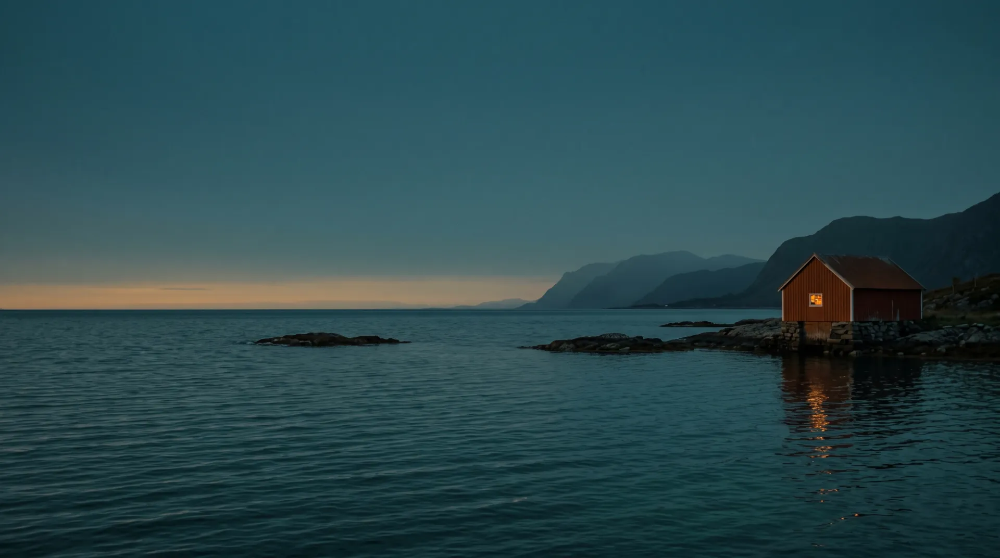

Nettsider, apper og digitale verktøy
Christian
Hermansen
Bergen
01
Jeg lager nettsider, apper og digitale verktøy.
02
For arrangører, lag, foreninger og små bedrifter.
03
Tegnet for deg, og bygget for hånd i Bergen.
Film
Arbeidet i bevegelse.
Utvalgte prosjekter